本报告由大模型自动生成，可能存在理解、归纳或数据转述错误；请以原论文为准。 DRAMSys: A Flexible DRAM Subsystem Design Space Exploration FrameworkMatthias Jung, Christian Weis, Norbert Wehn · IPSJ Transactions on System and LSI Design Methodology · 2015 · 原文 · PDF 报告模型：gemini-3.1-pro-preview / high 本文详细介绍了发表于 2015 年《IPSJ Transactions on System LSI Design Methodology》的受邀论文《DRAMSys: A Flexible DRAM Subsystem Design Space Exploration Framework》。这篇论文的核心目标是提出一个名为 DRAMSys 的灵活且全面的动态随机存取存储器（DRAM）子系统设计空间探索框架。 以下是按论文逻辑展开的详细解读。 1. 介绍 (Introduction)本节交代了现代计算系统面临的存储瓶颈以及随之而来的热管理与可靠性挑战，从而引出为什么需要一个全新的仿真框架。 问题背景与基础概念 在从移动设备到服务器的各类系统中，动态随机存取存储器（DRAM，即系统的主存）对整体性能和功耗有着巨大影响。当前多核处理器架构对数据吞吐量的需求急剧增长，而 DRAM 所能提供的 I/O（输入/输出）数据速率却进步缓慢，这种带宽需求与供给之间的日益扩大的差距被称为“内存墙（Memory Wall）”。传统的 DDR3 或 DDR4 内存试图通过提升接口速度或使用多个内存接口来缓解这一问题，但受到芯片封装引脚数量、功耗和成本的严格物理限制（这是硬件和物理强制的约束）。 为了突破内存墙，工业界提出了一种名为三维堆叠（3D stacking）内存的新技术，例如 JEDEC 标准的 Wide I/O 或美光的混合内存立方体（HMC）。为了帮助理解而补充的背景知识：3D 堆叠技术通常利用硅通孔（TSV，Through Silicon Via）技术，在垂直方向上穿透硅晶圆，将处理器（CPU）和外部内存直接堆叠在一起。原文指出，这种技术将 CPU 与 RAM 之间的距离从厘米级缩短到了微米级，不仅大幅提升了可用带宽，还极大地降低了数据传输的功耗。 引发的新问题：热危机与刷新开销 尽管 3D 堆叠内存具有高带宽和低功耗的优势，但它加剧了系统芯片（SoC）的热危机（Thermal crisis）。由于多个芯片垂直堆叠，功率密度急剧上升，且散热路径受阻。这对 DRAM 来说是致命的。DRAM 细胞利用微小的电容来存储数据位（电荷），这些电荷会随着时间不可避免地泄漏。DRAM 细胞能够安全保持数据而不丢失的时间被称为“保留时间（Retention time）”。为了防止数据丢失，内存控制器必须周期性地发出“刷新（Refresh）”命令，读取并重新写入数据。 由于泄漏电流对温度极其敏感，3D 堆叠导致的高温会使电荷泄漏显著加快。这意味着为了避免数据丢失（保留错误，Retention errors），系统必须提高刷新频率。然而，过多的刷新命令会占用原本用于读写数据的带宽，导致严重的性能下降，并产生巨大的额外功耗。 作者的解决方案 面对不同架构的 DRAM、复杂的应用需求、功耗、温度以及保留时间错误之间的复杂相互作用，作者提出，传统的局部优化已经不够，必须有一个能处理上述所有变量的“整体（holistic）”探索框架。因此，作者开发了 DRAMSys。该框架包含反映 DRAM 功能、功耗、温度和保留时间错误的多个模型，允许系统设计者分析系统瓶颈，并针对特定应用在控制器架构、功耗/热管理和设备选择上进行综合优化。 2. 模型 (Models)本节介绍了 DRAMSys 框架底层的四大核心模型，解释了作者如何在保持高仿真速度的同时，确保时序、功耗、温度和错误注入的准确性。 2.1 功能性 DRAM TLM 模型 设计探索框架首先需要一个基础的仿真环境。传统的寄存器传输级（RTL，Register Transfer Level）模型虽然能提供周期和引脚级别的最高时间精度，但由于需要模拟海量的信号和事件，仿真速度极慢，无法满足庞大设计空间的探索需求。 为此，作者选择基于 IEEE 标准的 SystemC 事务级建模（TLM2.0，Transaction Level Modeling）来实现系统。为了帮助理解而补充的背景知识：TLM 将引脚级别的电平跳变抽象为函数调用（即“事务”），从而大幅减少仿真器需要处理的事件数量，实现仿真速度的飞跃。然而，标准的 TLM2.0 提供的近似定时（AT，Approximately Timed）编码风格不足以反映 DRAM 复杂的内部时序状态机。 因此，作者提出了一种名为 DRAM-AT 的扩展协议。标准的 TLM 协议只包含请求开始（ 通过图 3，作者展示了这种 DRAM-AT 协议的追踪示例。图中展示了输入控制器的请求如何被转换为特定 Bank（DRAM 内部的存储体）上的命令序列。图中标注的 、、、 等是 JEDEC 规范强制约束的时序参数（原文未在正文明确给出这些参数的具体含义，也未说明其由字母组成的下标 RRD、RCD、RL、RP 的具体含义，但图 3 标示其单位为 ns）。DRAMSys 精确地模拟了这些时序依赖。例如，图 3 显示当访问同一个已激活的行（Page hit，页命中）时，后续的读命令可以紧接着前一个读命令的突发长度（，原文未说明其由字母组成的下标 BL 的具体含义，图 3 标示其单位为 ns）结束发出；而当访问不同的行时（Page miss，页未命中），必须先发出预充电（PRE）关闭旧行，再发出激活（ACT）打开新行。 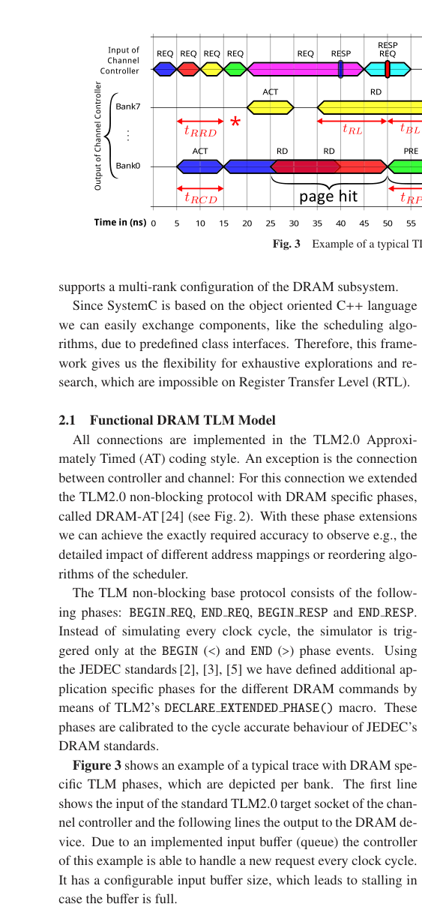 在性能评估方面（如图 4 和图 5 所示），作者将该 TLM 模型与周期精确（CA）的 SystemC 模型以及 RTL 仿真器进行了对比。结果表明，DRAMSys 的 TLM 模型在保持周期级时序精度的同时，实现了 75 倍到 600 倍的仿真加速，达到了精度与速度的完美平衡。 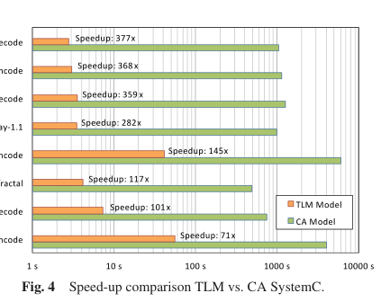 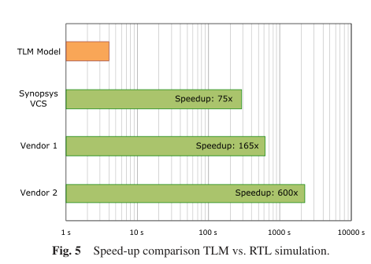 2.2 DRAM 功耗模型 传统的功耗评估通常使用美光科技提供的功耗计算器，但该工具依赖于数据手册中最坏情况下的最小时间间隔，且假设了特定的工作负载特征，因此不够准确（原文未说明具体数学公式）。作者采用了改进后的开源工具 DRAMPower，并将其修改为可被 SystemC 调用的 C++ 库，集成到框架中，使其能够在仿真运行期间根据真实的动态时序在线计算功耗。 2.3 3D-DRAM 热模型 针对 3D 封装带来的热密度增加问题，DRAMSys 建立了一个跨层的仿真闭环。框架可以连接到外部的专业热仿真器（如 3D-ICE 或 DOCEA Power）。这里的接口传递逻辑是：DRAMSys 将架构侧的功耗分布作为激励条件（输入）传递给热仿真器，热仿真器计算出 3D 芯片内部的空间温度分布，并将温度结果反馈回 DRAMSys；DRAMSys 根据温度调整 DRAM 的约束（如刷新周期），进而再次影响系统的性能和功耗。这种架构与 EDA（热分析）工具的协同，对于评估任务迁移或处理器降频等热管理策略至关重要。 2.4 DRAM 错误模型
为了分析降低刷新率对应用容错性的影响，作者构建了一个感知保留时间的错误模型。由于电容漏电，保留时间呈指数级反比于温度。作者通过对 Wide I/O 和 DDR3 设备的真实物理测量（结果见图 6），发现保留时间不仅受温度影响，还高度依赖于写入的数据模式（如简单的 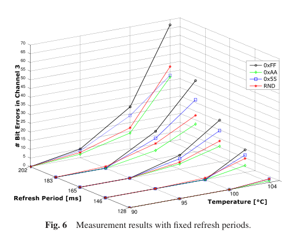 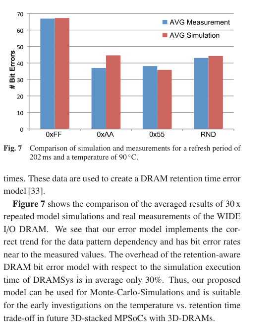 3. 分析 (Analysis)本节说明了从上述模型获取的数据如何被存储和解析。DRAMSys 将 DRAM-AT 协议的所有阶段详细记录在一个 SQLite 数据库中。作者开发了一个名为 Trace Analyser 的追踪分析工具（界面如图 18 所示），利用 SQL 的数据聚合能力，结合 Python 接口处理海量的事务数据。设计者可以通过编写 Python 脚本定制 SQL 语句，计算如内存利用率（带宽）、平均响应延迟或处于省电模式的时间比例等指标，并验证生成的内存命令是否违反了 JEDEC 硬件标准。 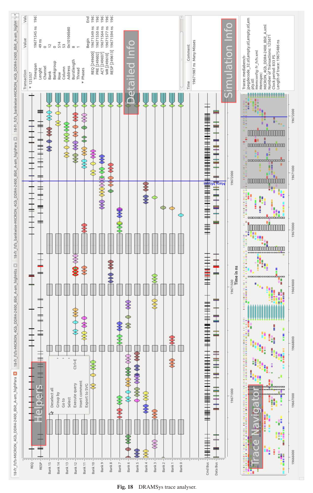 4. 优化 (Optimisation)在建立了全貌后，本节是文章的核心应用部分。作者通过四个具体的用例，展示了如何利用 DRAMSys 框架修改软硬件设计选择，以达到提升带宽和能效的目的。 4.1 地址映射 (Address Mapping) 地址映射是指内存控制器如何将 CPU 发出的逻辑物理地址的各个位（bits）分配给 DRAM 的通道、Rank、Bank、行和列。这完全是系统架构师的设计选择。对于具有规律性访问模式的应用（如 FPGA 上的图像处理），使用复杂的动态调度器往往是性能过剩且耗电的，针对特定应用的静态自定义地址映射反而更有效。 作者利用框架分析了某图像处理应用中每个地址位的翻转率（活动频率）。框架自动提出了一条映射规则：将活动最高（翻转最快）的位映射到列地址以增加行缓冲器的命中率；将活动最低的位映射到行地址以减少换行（行未命中）开销。 然而，简单的重映射导致了读写操作在不同 Bank 上的并行度失衡。为了解决这个问题，作者借用了 CPU 架构中的技术，将控制 Bank 的地址位与写入活动最高的行地址位进行异或（XOR）运算（这是对硬件地址线的重新布线逻辑），从而恢复了负载均衡。 DRAMSys 根据此策略自动生成了一段 Verilog 硬件描述语言代码（称为地址扰频器，Address scrambler），将其作为 Xilinx MIG（一种现成的商用内存控制器 IP，其自身仅支持有限的映射方案，属于硬件约束）的前端。图 9 显示，这种跨越架构分析和底层 RTL 代码生成的协同设计，使系统的实际带宽比标准映射提高了 30%。 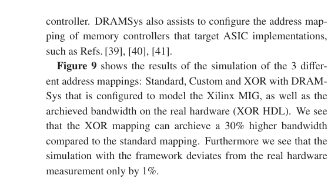 4.2 交错掉电策略 (Staggered Power-Down)
DRAM 具有多种功耗模式。除了正常的激活模式（ACTIVE，时钟使能信号 目前主流的内存控制器依赖简单的硬件超时计数器，在空闲一段时间后盲目进入 SREF，这往往因为频繁的模式切换反而增加了平均功耗。 作者设计了一种基于软件逻辑的“交错（Staggered）”掉电策略（如图 11 所示）。核心逻辑是利用 DRAM 必须执行周期性刷新的这一硬件强制约束作为触发状态切换的天然时钟： 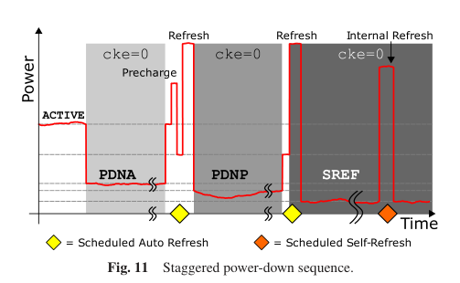
4.3 逐 Bank 刷新 (Bankwise Refresh) 在上一节交错掉电优化的基础上，作者结合 2.3 节的 3D 热仿真闭环，提出了针对温度梯度的刷新策略。通过热仿真（图 13），作者发现在 3D SoC 结构中，不仅垂直方向有 5.6°C 的温差，即使在同一硅片（Die）相邻的两个 DRAM Bank 之间，也存在 3.3°C 的横向温差。 传统的硬件规范要求整个通道内的所有芯片必须以满足其中最热点的最高频率进行刷新。作者打破了这一选择，设计了“逐 Bank 刷新”机制：只针对各自 Bank 的局部最高温度单独设定刷新周期。如图 14 所示，温度较低的 Bank 可以将刷新周期延长，从而大幅减少了整体系统的刷新命令发射总数。图 15 验证了这一策略显著降低了系统的刷新功耗。 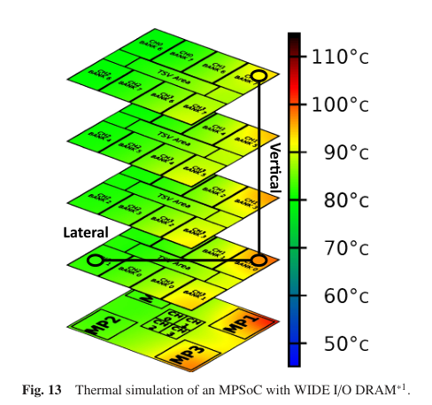 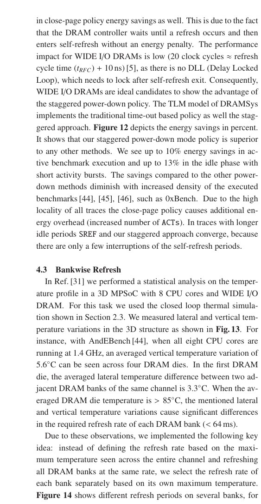 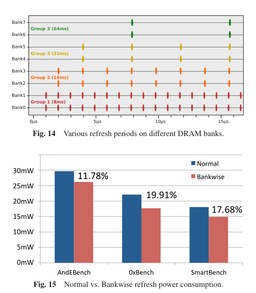 4.4 交错逐 Bank 掉电 (Bankwise Staggered Power-Down) 交错掉电（4.2节）依赖对所有 Bank 进行全局刷新来触发进入最深睡眠（SREF），而逐 Bank 刷新（4.3节）刻意让各 Bank 的刷新时间错开。这两者似乎是矛盾的。 作者指出，如果底层 DRAM 硬件支持独立的 Bank 级掉电控制，这两种策略就可以结合。结果显示（表 1），结合后的策略使得平均功耗比无掉电模式降低了 13.4%，且相比于单纯的交错策略，平均响应延迟还恢复（改善）了 9.1%，实现了功耗与性能的双赢。 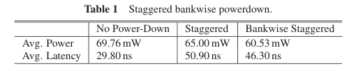 4.5 刷新感知调度 (Refresh Aware Scheduling) 现代 DRAM 控制器通常采用 FR-FCFS（优先服务行命中，其次服务最老请求）的调度算法。然而，这种控制器属于“盲目”调度，它不知道后端何时会发生刷新。 当刷新命令执行时，硬件强制要求所有行被关闭（预充电）。刷新结束后，由于控制器仍然坚持“行命中优先”原则，它可能会重新打开刚刚被强制关闭的行，以继续服务之前的线程，导致其他在队列中等待更久的老线程被“饿死”（如图 17 中 Un-Fair 场景中，红色线程一直被蓝色线程压制）。 作者提出了一种跨越控制层级的“刷新感知”设计：将即将发生刷新的时间点作为先验信息，从控制器的后端传递到前端的调度器。调度器利用刷新导致的必然中断，在刷新结束后主动打破原有的行缓冲优先级，转而服务等待最老的请求，从而重新建立多线程间的公平性（Fair 场景）。表 2 证明了该策略有效减少了调度策略违规的次数。 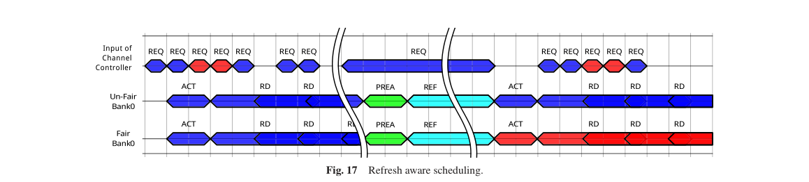 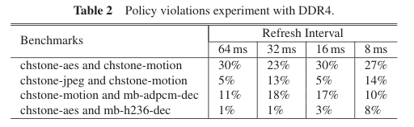 5. 相关工作与 6. 结论 (Related Work & Conclusion)最后，作者对比了领域内现有的几种工具，以凸显 DRAMSys 的优势。例如，最著名的 DRAMSim2 是周期精确的模型，虽然便于移植，但严重拖慢了全系统仿真的速度，且缺乏对新内存规范（Wide I/O, DDR4）的支持。另一个名为 USIMM 的工具仅关注内存调度器逻辑，而未模拟底层物理架构。全系统仿真器 Gem5 虽然快，但在当时缺乏针对 DRAM 省电模式、热管理及错误率的具体物理级建模，也难以直接对接商业 TLM 工具链。 全文主线与总结 本文的主线非常清晰：为了解决多核计算系统面临的“内存墙”瓶颈，工业界引入了 3D 堆叠内存技术；但这随之引发了由于功率密度飙升带来的严重热危机，进一步导致 DRAM 漏电加剧和刷新开销失控的连锁反应。为了应对这一跨越架构、功耗、热学和物理设备的复杂难题，作者开发了高度模块化的 DRAMSys 仿真框架。 DRAMSys 并不是提出单一的硬件电路，而是提供了一个能够平衡仿真速度与周期精度的基础平台（通过扩展的 DRAM-AT TLM2.0 协议），并将其与外部的功耗（DRAMPower）、热学仿真引擎有机连接。通过该框架，作者成功揭示并验证了一系列软件/架构层面的设计优化（如根据活动重新生成地址映射逻辑以提升带宽、利用刷新周期代替硬件超时器实现智能掉电、基于局部热分布的逐 Bank 刷新、以及打破调度器盲区的刷新感知调度）。 局限性与前提假设： 本文的结论和工具高度依赖于其提出的几个关键假设和经验模型。例如：
|